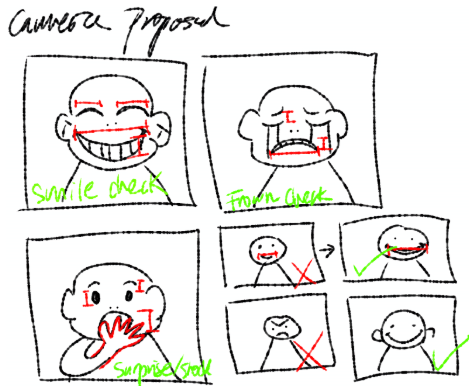

Because camera feature doesn't work when I am in github so here is the link
SMILE p5js Edit Page
For this project the initial proposal was inspired by my experience of a phenomenon especially here in the US that occurs when two strangers meet eyes when they go past each other, and to acknowledge the eye contact it is most typical to do a straight smile, nothing too big that would show teeth because you don't know the person, but if you don't smile back it is considered rude and snobbish that you didn't acknolwedge or give the same pleasant greeeting back. It is more subconcious that I realized I began to conform to this custom when I moved here, and now my go-to smile even without the awkward eye contact is the straight smile. It amkes me wonder with these societally forced behaviors, the standard for "nice" body language is to always be positive, smiling, extroverted, etc. So I made this "government" sanctioned smile checker similar to the TSA at the airport where they scan your face to match to your ID and the system. If you don't smile wide enough you don't past the test, and the ideal smile arch is set, and doesn't change no matter the muscles of the individual or how their mouth is shaped.
As for the process I first created sketches in pt 1 as a concept and worldbuilding step which included several sketches of different cameras. There is a smile, a frown, and a shock face tracker, and together the initial proposal was to have three regulated emotions not including anger that were "permitted" for usage. Then the next step was the grayboxing, where I made a facial tracker through ml5 and added tracking to highlight the eyes and the mouth based on the calcuated person's face. If the detected smile doesn't reach there would be a big x that would appear. In part 3, I utilized facemesh techniques from the coding train which has specific trnagulated face mapping and lip contouring tracking to flesh out the rough lines I had in graybox, and I researched the particle system logic that would cause the already mapped triangles to splinter and fall once the smile was detected not to have reached the standard. Lastly I added statements that would delay the tracking by mimicking "to calculating ideal smile according to the face" and UI elements that would change depending on the outcome of the test.
For this project because I have already done tracking before the logic wasn't that difficult to utilize however there was a lot of troublehshooting to have with the smile tracking, and the most difficult part was applying the splinter face where the goal was after the smile test failed, the code would take a "still" of the face and THEN the image including the color of the skin within the triangles would splinter and fall. OVerall I did enjoy doing this, and I am hoping to take this to the next level where I can make a website for this where it is free and accessessable and everyone can have their smile shown to more people. I think people have a fixation on perfection, and that applies to smiles as well, as can be seen in the dentist office. This website would be able to normalize different smiles to different faces, and all of them should be perfect as is. The eyes would be blacked out for identity protection.
